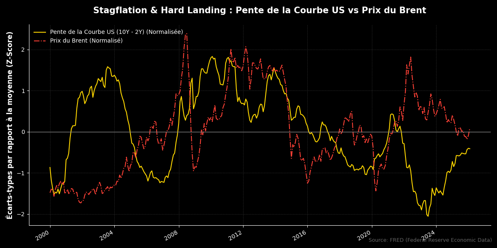
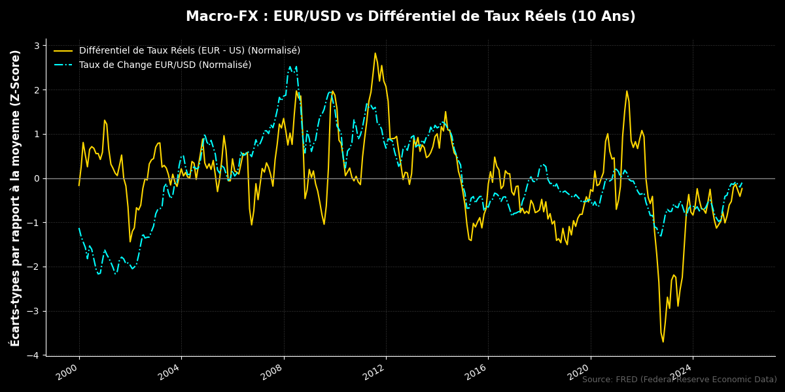

Forex
US (Dollar Américain)
Le contexte géopolitique demeure assez inchangé depuis quelques semaines, avec une incertitude persistante et des déclarations de la Maison Blanche toujours aussi hasardeuses. Cela dit, l’indépendance des États-Unis face aux chocs énergétiques rend le dollar plus que solide aux yeux des investisseurs, avec la guerre au Moyen-Orient qui a installé une atmosphère risk-off, le billet vert ne peut que s’en apprécier.
Sur les prochaines semaines, les données relatives à l’emploi et à l’inflation aux US seront surveillées de près étant donné le ton de la FED. En effet, sur le marché nous voyons une attention accrue aux données sur l'emploi (Non-farm Payrolls). Un marché du travail solide permettrait à la Fed de maintenir des taux élevés et donc de limiter l’inflation due au choc énergétique, quand bien même les États-Unis sont mieux prémunis contre ce dernier en raison de leur indépendance énergétique.
Évidemment, le prix des options FX s’est vu augmenté, en raison des différentes primes de risques durant ce week-end de 4 jours, augmentant ainsi l’incertitude relative au conflit iranien.

Notre vision sur le dollar demeure assez optimiste, étant donné que les conflits n’ont pas vu de ralentissement trop important sur les derniers jours. En revanche, la volatilité reste à surveiller sur les différents marchés comme le SP500 ou bien encore EURUSD.
EUR (Euro)
Pour ce qui est de la zone euro, nous sommes toujours à peu près dans la même conjoncture que précédemment. Néanmoins, le coût du pétrole semble persister sur des niveaux très importants… L’Europe, importatrice nette d’énergie va avoir mal… très mal. Le coût de la vie pour les différents pays de la zone euro va grimper en flèche. Étant donné que l’Europe a eu la merveilleuse idée de supprimer le nucléaire et de passer au charbon en Allemagne, et que la France fait de même … (pas le charbon mais de magnifiques éoliennes), notre indépendance énergétique est proche de zéro en ce temps de crise.
Préparez votre liquidité de précaution, car vous risquez d’en avoir besoin dans un futur proche.
Néanmoins, dans une vision court-terme, le spread de taux d’intérêt entre la BCE et la FED, si la BCE venait à augmenter les taux pour contrer l’inflation du coût énergétique et donc l’inflation générale, pourrait bénéficier à l’euro qui s’apprécierait et donc ferait diminuer le coût des importations donc le coût de l’énergie importée. Mais dans une vision plus long terme, ce choc énergétique nous rattraperait, que ce soit en France, avec une fiscalité trop élevée sur le prix du carburant ou bien sur l’impact de l’appréciation de l’euro sur la compétitivité de notre zone économique vis-à-vis des producteurs étrangers.

La vision sur l’euro demeure alambiquée, étant donné le pivot hawkish (politique visant à contrer l’inflation) de la BCE et les conflits au Moyen-Orient toujours en cours.
JPY (Yen Japonais)
Le yen subit une pression massive, flirtant avec le seuil des 160,00 contre le dollar. Contrairement aux autres banques centrales du G10, la Banque du Japon (BoJ) est perçue comme étant "derrière la courbe" en raison de ses taux d'intérêt réels fortement négatifs.
Le marché anticipe une intervention directe sur le marché des changes potentiellement à hauteur de 100 milliards de dollars, financée par la liquidation de bons du Trésor américain, ce qui pourrait aggraver la hausse des rendements obligataires mondiaux.
La situation illustre le mécanisme de "Catch-up" monétaire. Alors que la Fed et la BCE ont déjà entamé ou stabilisé leur cycle de resserrement, la BoJ doit ajuster sa politique pour éviter une dépréciation incontrôlée.
Selon la parité non couverte des taux d'intérêt (UIP), tant que le différentiel de taux réel reste largement défavorable au Japon, la pression vendeuse sur le JPY persistera malgré les menaces d'intervention.
Les minutes de la réunion des 18-19 mars ont révélé des débats sur une hausse de 50 points de base, signalant un virage hawkish plus agressif que prévu. Une surprise positive dans le sondage Tankan pourrait valider cette trajectoire et offrir un support structurel au yen.
Notre vision pour le yen : ce dernier pourrait continuer à se déprécier en attendant les mesures de la BoJ (cf. PTI) mais attention tout de même aux annonces et données japonaises qui pourraient donner plus d’informations sur la politique monétaire que ce que nous avons déjà en main…
Commodités
OIL / BRENT : Le prix se stabilise autour des 100 $
Mise à jour sur la situation :
Les pays du Golfe réévaluent des projets massifs de pipelines pour contourner le goulot d'étranglement (choke point) d'Hormuz face à la menace d'un contrôle iranien permanent. Les coûts de construction estimés entre 5 et 20 milliards USD, risques sécuritaires (militants, mines) et nécessité d'une coopération politique transfrontalière inédite. L'oléoduc Est-Ouest de l'Arabie saoudite (1 200 km) est devenu un actif stratégique vital, acheminant 7 millions de barils par jour vers le port de Yanbu en mer Rouge.
Léo Lombardini
Fondateur & Quant Analyst
Étudiant à l'EDHEC Business School en Marchés Financiers. Passionné par l'intersection entre la modélisation macroéconomique fondamentale et l'analyse quantitative systématique.
Suivre sur LinkedIn>> Lire aussi
Avertissement & Sources
Les informations fournies dans ce rapport sont à titre informatif uniquement et ne constituent pas un conseil en investissement. L'ensemble des opinions exprimées reflètent l'analyse au moment de la rédaction et sont sujettes à évolution rapide en fonction du marché de l'énergie et des conditions géopolitiques.